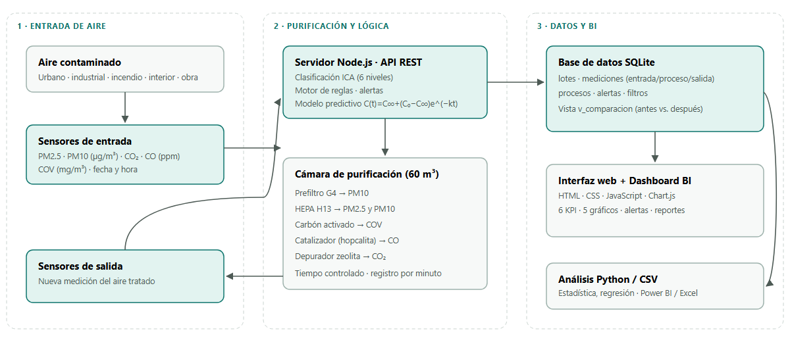
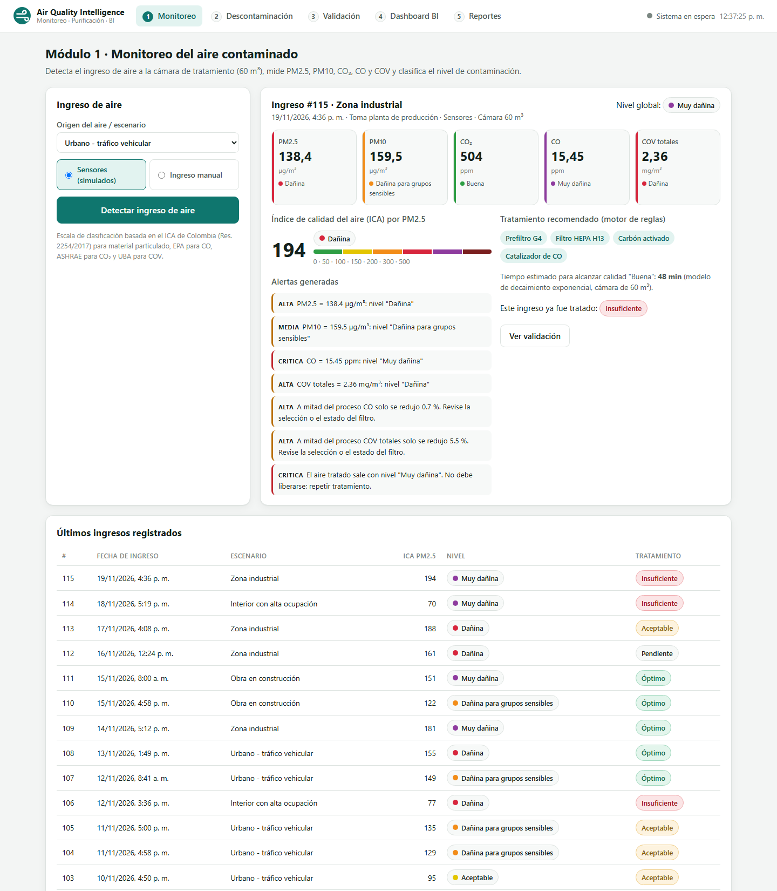
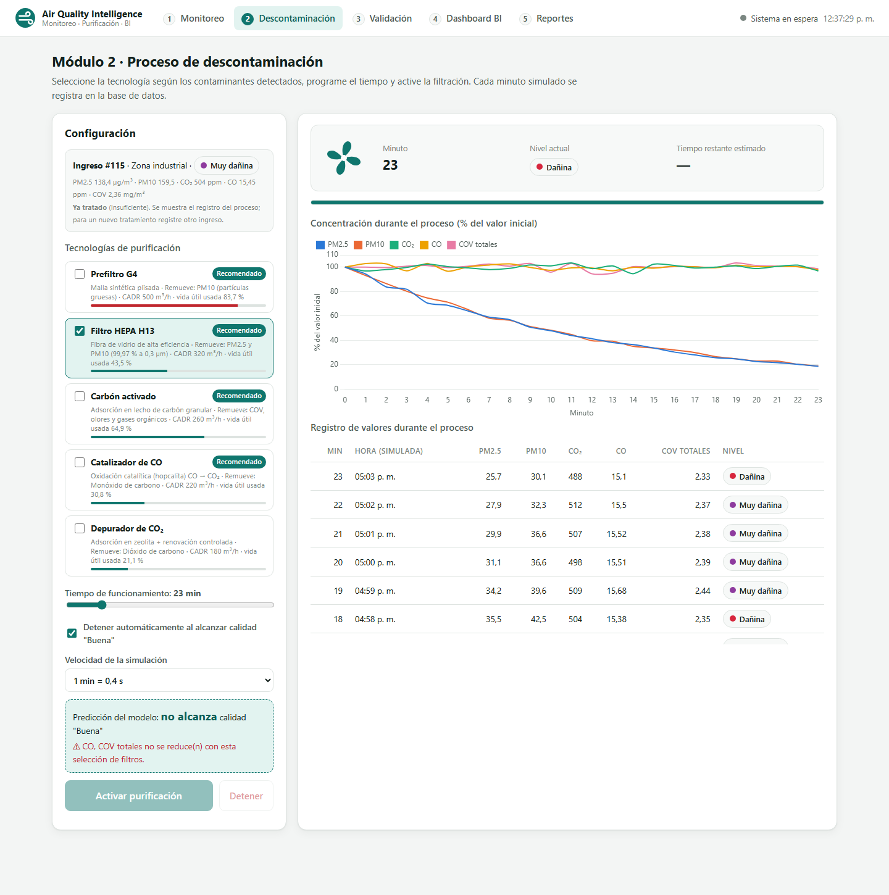
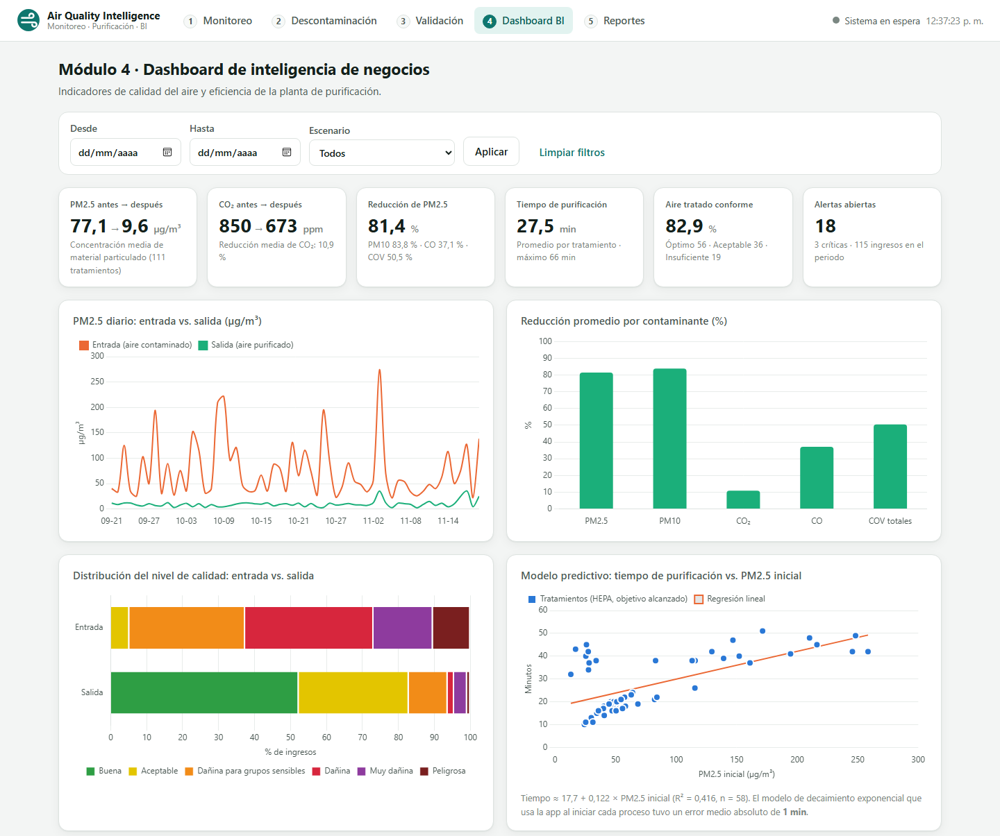
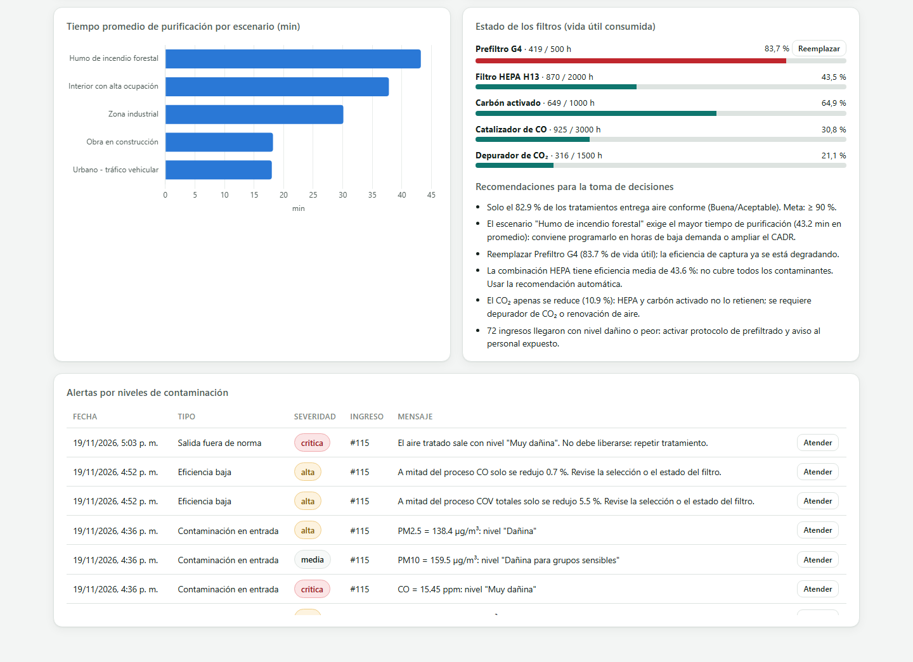

Sistema inteligente para el monitoreo, descontaminación y purificación del aire mediante tecnología y software
Informe técnico
José Fernando Téllez
Inteligencia de Negocios
Repositorio: https://github.com/<usuario>/air-quality-intelligence
Video demostrativo: <enlace de YouTube>
20 de noviembre de 2026
La contaminación del aire por material particulado (PM2.5 y PM10) y gases como el monóxido de carbono (CO) y el dióxido de carbono (CO₂) afecta la salud de las personas expuestas en ambientes exteriores, industriales e interiores. El reto planteado es: ¿cómo desarrollar una aplicación inteligente que permita identificar el ingreso de aire contaminado, analizar sus componentes, controlar el proceso de descontaminación y verificar la calidad del aire purificado mediante indicadores y herramientas de inteligencia de negocios?
Objetivo general: diseñar y desarrollar una aplicación de inteligencia de negocios que monitoree la calidad del aire, identifique contaminantes, simule el proceso de purificación y presente los resultados en dashboards e indicadores para apoyar la toma de decisiones.
Objetivos específicos: (1) registrar y clasificar el aire que ingresa; (2) seleccionar la tecnología de purificación según el contaminante y controlar su tiempo de funcionamiento; (3) validar el aire tratado comparando valores iniciales y finales; (4) construir un dashboard con indicadores de eficiencia, alertas y un modelo predictivo.
La solución se organiza en cuatro componentes: entrada de aire (sensores de PM2.5, PM10, CO₂, CO y COV), sistema de purificación (cámara de 60 m³ con cinco tecnologías), software BI (API, motor de reglas, modelo predictivo y dashboard) y base de datos (mediciones de entrada, proceso y salida).

Figura 1. Arquitectura de la solución.
| Capa | Tecnología | Uso |
|---|---|---|
| Interfaz | HTML5, CSS3, JavaScript, Chart.js 4.4 | Módulos 1–4, dashboard y reportes (modo claro/oscuro, adaptable a móvil) |
| Backend | Node.js ≥ 22 (http nativo) | API REST, simulación de sensores y del proceso, reglas de alerta |
| Base de datos | SQLite (node:sqlite); script equivalente PostgreSQL | Almacenamiento de lotes, mediciones, procesos, alertas y filtros |
| Análisis | Node.js y Python (librería estándar) | Estadística antes/después, prueba t pareada, regresión, exportación CSV para Power BI |
| Tabla | Contenido |
|---|---|
| lotes | Cada ingreso de aire: fecha y hora, escenario de origen, ubicación, volumen, fuente (sensor/manual), nivel e ICA de entrada. |
| mediciones | Lecturas de PM2.5, PM10, CO₂, CO y COV con su etapa (entrada, proceso minuto a minuto, salida) y nivel. |
| procesos | Filtros usados, tiempo programado y real, tiempo predicho, % de reducción por contaminante, eficiencia global y resultado. |
| alertas | Tipo, severidad, contaminante, valor, umbral, mensaje y estado (atendida). |
| filtros | Catálogo de tecnologías con CADR, vida útil y horas de uso. |
| v_comparacion (vista) | Una fila por ingreso con valores antes y después: fuente del dashboard y de Power BI. |
Se usa una escala de seis niveles basada en el Índice de Calidad del Aire de Colombia (Resolución 2254 de 2017) para PM2.5 y PM10; los cortes de CO siguen la EPA, los de CO₂ las recomendaciones de ventilación (ASHRAE/REHVA) y los de COV las guías de la agencia ambiental alemana (UBA). El nivel global del aire es el del contaminante más crítico.
| # | Nivel | PM2.5 µg/m³ | PM10 µg/m³ | CO₂ ppm | CO ppm | COV mg/m³ |
|---|---|---|---|---|---|---|
| 1 | Buena | ≤ 12 | ≤ 54 | ≤ 800 | ≤ 4.4 | ≤ 0.3 |
| 2 | Aceptable | 12 – 37 | 54 – 154 | 800 – 1000 | 4.4 – 9.4 | 0.3 – 0.5 |
| 3 | Dañina para grupos sensibles | 37 – 55 | 154 – 254 | 1000 – 1500 | 9.4 – 12.4 | 0.5 – 1 |
| 4 | Dañina | 55 – 150 | 254 – 354 | 1500 – 2000 | 12.4 – 15.4 | 1 – 3 |
| 5 | Muy dañina | 150 – 250 | 354 – 424 | 2000 – 5000 | 15.4 – 30.4 | 3 – 10 |
| 6 | Peligrosa | > 250 | > 424 | > 5000 | > 30.4 | > 10 |
| Tecnología | Principio | Contaminante objetivo | CADR m³/h | Vida útil h |
|---|---|---|---|---|
| Prefiltro G4 | Malla sintética plisada | PM10 (partículas gruesas) | 500 | 500 |
| Filtro HEPA H13 | Fibra de vidrio de alta eficiencia | PM2.5 y PM10 (99,97 % a 0,3 µm) | 320 | 2000 |
| Carbón activado | Adsorción en lecho de carbón granular | COV, olores y gases orgánicos | 260 | 1000 |
| Catalizador de CO | Oxidación catalítica (hopcalita) CO → CO₂ | Monóxido de carbono | 220 | 3000 |
| Depurador de CO₂ | Adsorción en zeolita + renovación controlada | Dióxido de carbono | 180 | 1500 |
La cámara se modela como un reactor de mezcla completa. Para cada contaminante:
C(t) = C∞ + (C0 − C∞) · e−k·t, k = Σ (CADRi · ηi · di) / V
donde C∞ es la concentración mínima alcanzable, η la eficiencia de captura de cada filtro, d un factor de desgaste (la eficiencia cae hasta 35 % al final de la vida útil) y V el volumen de la cámara. Despejando t se predice el tiempo necesario para alcanzar el nivel “Buena”. Durante el proceso, k se reestima por mínimos cuadrados sobre ln(C − C∞) con las lecturas reales para actualizar el tiempo restante.
Registra la fecha y hora del ingreso, mide los cinco contaminantes (sensores simulados por escenario o ingreso manual), calcula el ICA de PM2.5, clasifica el nivel, genera alertas y recomienda la tecnología de purificación con el tiempo estimado.

Figura 2. Módulo de monitoreo.
Permite seleccionar los filtros (con su vida útil), fijar el tiempo de funcionamiento (5–120 min), detener automáticamente al alcanzar calidad “Buena” y activar la filtración simulada. Cada minuto se registra una medición en la base de datos y se muestra la curva de concentración y el tiempo restante estimado.

Figura 3. Proceso de descontaminación con registro minuto a minuto.
Al terminar se toma una nueva medición, se comparan los valores iniciales y finales, se calcula el porcentaje de reducción de cada contaminante y la eficiencia global (promedio de los contaminantes que estaban fuera de “Buena”), y se clasifica el resultado: Óptimo (aire en nivel Buena y eficiencia ≥ 50 %), Aceptable (nivel Aceptable o mejor) o Insuficiente.
Figura 4. Validación antes vs. después.
El dashboard incluye seis indicadores (PM2.5 antes→después, CO₂ en ppm, porcentaje de reducción, tiempo de purificación, porcentaje de aire conforme y alertas abiertas), cinco visualizaciones, el estado de los filtros, la tabla de alertas y recomendaciones automáticas. Se puede filtrar por rango de fechas y escenario; la pestaña de reportes genera el resumen ejecutivo, CSV y PDF.

Figura 5. Dashboard: filtros, indicadores y gráficos principales.

Figura 6. Dashboard: tiempos por escenario, estado de filtros, recomendaciones y alertas.
| Regla / modelo | Condición | Acción |
|---|---|---|
| Contaminación en la entrada | Contaminante en nivel ≥ 3 (media), 4 (alta) o ≥ 5 (crítica) | Alerta y recomendación de filtros |
| Eficiencia baja | A mitad del tiempo programado, reducción < 40 % de un contaminante crítico | Alerta: revisar selección o estado del filtro |
| Salida fuera de norma | Aire tratado con nivel ≥ 3 | Alerta: no liberar, repetir tratamiento |
| Filtro saturado | Horas de uso ≥ 80 % de la vida útil | Alerta de mantenimiento preventivo |
| Modelo predictivo | Decaimiento exponencial + regresión histórica | Tiempo estimado al iniciar y tiempo restante en línea |
Se analizaron 115 ingresos de aire simulados entre 2026-09-21 y 2026-11-19, de los cuales 111 completaron el tratamiento.
| Contaminante | Unidad | Promedio antes | Promedio después | Reducción media |
|---|---|---|---|---|
| PM2.5 | µg/m³ | 77,08 | 9,56 | 81,4 % |
| PM10 | µg/m³ | 164,47 | 16,13 | 83,8 % |
| CO₂ | ppm | 851,35 | 673,02 | 10,9 % |
| CO | ppm | 8,57 | 3,69 | 37,1 % |
| COV totales | mg/m³ | 0,96 | 0,37 | 50,5 % |
El material particulado se redujo en promedio 81,4 % (PM2.5) y 83,8 % (PM10), con diferencias estadísticamente significativas (prueba t pareada, ver docs/analisis_resultados.md). El CO₂ apenas bajó 10,9 % porque solo una parte de los tratamientos incluyó el depurador de CO₂. El tiempo medio de purificación fue 27,5 min y el 82,9 % de los tratamientos entregó aire conforme (Óptimo 56, Aceptable 36, Insuficiente 19).
Ejemplo: el ingreso #109 (zona industrial) llegó con PM2.5 = 113,2 µg/m³ y CO = 17,67 ppm; tras 38 min con PRE + HEPA + CARBON + CATAL salió con 4,2 µg/m³ y 2,62 ppm (predicción: 39,7 min).
| Escenario | Ingresos | PM2.5 inicial | Tiempo medio (min) | Eficiencia | Insuficientes |
|---|---|---|---|---|---|
| Urbano - tráfico vehicular | 44 | 45,9 | 18,0 | 60,2 % | 4 |
| Interior con alta ocupación | 23 | 22,9 | 37,8 | 64,5 % | 6 |
| Zona industrial | 18 | 117,9 | 30,1 | 76,3 % | 4 |
| Humo de incendio forestal | 17 | 212,2 | 43,2 | 84,8 % | 4 |
| Obra en construcción | 13 | 60,0 | 18,2 | 73,3 % | 1 |
| Tecnologías | Procesos | Eficiencia | Tiempo medio (min) |
|---|---|---|---|
| PRE + HEPA + CARBON + CATAL | 31 | 79,5 % | 28,9 |
| HEPA + CARBON + CO2 | 18 | 69,4 % | 33,9 |
| HEPA | 15 | 43,6 % | 34,9 |
| HEPA + CARBON + CATAL | 14 | 57,7 % | 16,0 |
| PRE + HEPA + CARBON | 9 | 75,7 % | 18,7 |
| PRE + HEPA + CARBON + CATAL + CO2 | 8 | 76,9 % | 36,1 |
| HEPA + CARBON | 6 | 68,9 % | 20,0 |
| HEPA + CATAL | 4 | 67,0 % | 18,3 |
Usar solo HEPA cuando hay gases presentes produce la menor eficiencia: confirma que la tecnología debe elegirse según el contaminante.
Regresión lineal histórica: tiempo ≈ 17,70 + 0,122 × PM2.5 inicial (R² = 0,416, n = 58). El R² moderado se explica porque el tiempo también depende de los gases presentes; por eso la aplicación usa el modelo exponencial por contaminante, cuyo error medio absoluto frente al tiempo real fue de 1,0 min.
| Tipo | Severidad | Cantidad |
|---|---|---|
| CONTAMINACION_ENTRADA | alta | 108 |
| CONTAMINACION_ENTRADA | critica | 56 |
| CONTAMINACION_ENTRADA | media | 101 |
| EFICIENCIA_BAJA | alta | 44 |
| FILTRO_SATURADO | media | 1 |
| SALIDA_FUERA_NORMA | alta | 12 |
| SALIDA_FUERA_NORMA | critica | 7 |

Figura 7. Reporte para la toma de decisiones.